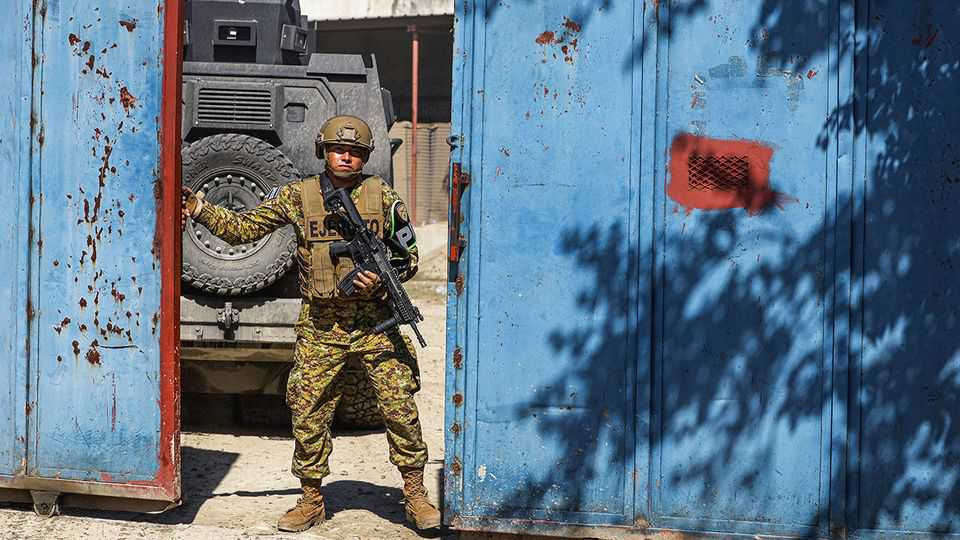
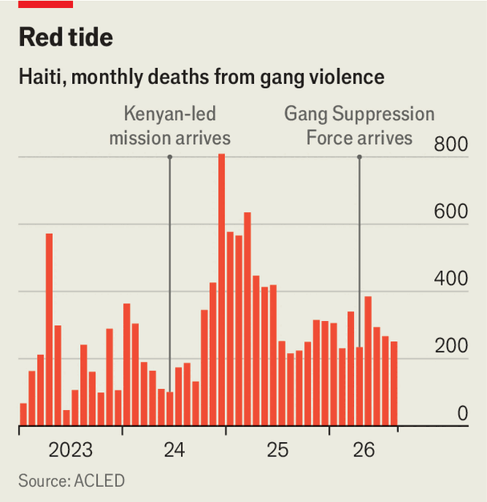

El Salvador’s president thinks he can eliminate Haiti’s gangs
Nayib Bukele has dispatched 2,000 troops to the island

Nov 5th 2026
President Nayib Bukele has gained fame around the world for making El Salvador safer—albeit in a deeply vexing way. Leaders from Latin America trek to see the mega-prison in which he has locked up thousands of men accused of being in gangs, often without due process. Even domestic critics acknowledge that his round-ups have improved everyday life for most people. But now Mr Bukele wants to go further. Since October 22nd he has deployed over 2,000 Salvadoran soldiers to gang-ridden Haiti. He has warned its gangs (in Haitian Creole) that he can “finish with you too”.

Haiti has slumped into appalling chaos since its last elected president, Jovenel Moïse, was assassinated in his bedroom in 2021. Gangs control most of the capital, Port-au-Prince, as well as some areas outside it. At least 16,000 Haitians have been killed during the anarchy; 1.5m have been displaced (see chart). Two years ago Mr Bukele boasted that he could sort the mess out.
A pretext emerged on October 18th when four Salvadoran aviation technicians serving in Haiti as part of a UN-backed “Gang Suppression Force” (GSF) were ambushed and disappeared. Although they are probably dead—bodies purported to be those of the Salvadorans were handed over for testing on October 24th—Mr Bukele says he is mounting a rescue mission. Few believe that finding lost comrades is his sole aim, given what he has said about Haiti before, and the number of men he has sent. The Salvadoran force in Haiti now outnumbers all the soldiers serving with the GSF, who are drawn from six countries including Chad and Guatemala.
Mr Bukele’s operation marks the largest deployment of foreign troops to a country in the Americas, outside the remit of a UN mission, in many years. Much about it is murky, not just the scale of his ambitions. In 2024, speculating on the possibility of intervening, Mr Bukele said he would need a resolution from the UN, along with Haiti’s consent, and for costs to be covered.
Only one of these preconditions is clearly in place. On October 28th, six days after Salvadoran troops started to arrive, Haiti’s government said it had authorised the deployment (the terms of the agreement are not public). The United States also appears to have given a nod. Donald Trump is reported to have told Mr Bukele, during a phone call, “You have to do what you have to do.” Some Salvadoran troops flew in on an American military plane. Countries including Colombia and Haiti’s neighbour, the Dominican Republic, have also pledged logistical support—citing their joint membership of the “Shield of the Americas”, a group of countries that have promised to work with Mr Trump to combat gangs in the region.
Mr Bukele says El Salvador is paying at least 90% of the operation’s expenses. But some doubt this can be true; they wonder if money from the United States is involved. Deploying 2,000 soldiers to a country with no infrastructure, where even the water will make you sick, is extremely expensive, says Adam Isacson of the Washington Office on Latin America, a think-tank in the United States.
The UN confirms the Salvadorans are not working within the remit of the GSF. (Mr Bukele reportedly promoted the general in charge of his contingent to three stars before dispatching him, perhaps so he outranked the two-star Mongolian general leading the UN team.) The deployment risks creating “confusion and challenges for co-ordinating operations and for determining accountability for any possible violations of international law”, says William O’Neill, the UN’s expert on human rights in Haiti. It could be the beginning of the end for the GSF, says Jake Johnston of the Centre for Economic and Policy Research, another Washington think-tank.
What might Mr Bukele achieve? “He may get some tweets out of this; videos of stuff that goes boom,” says Mr Isacson. A brief deployment may impress Salvadorans. But at least some people believe Mr Bukele could make Haiti safer in the long term. Luis Contreras, a Salvadoran security analyst, thinks the gangs are no match for soldiers. “Any army could do it,” though it might take a while, he says.
Haiti’s situation is so desperate (half the population of 12m suffer acute hunger) that many in the region welcome Mr Bukele having a go. Haitians have to be “pragmatic”, says Jean Walnard Dorneval, a former Haitian defence minister. “We cannot simply sit idly by for fear of collateral damage while gangs have been traumatising the population.” There is a chance that Mr Bukele’s iron-fist reputation may scare gang leaders into negotiating.
Yet the risks of getting bogged down are huge. Mr Bukele may underestimate Haiti’s problems: on October 29th he insisted that El Salvador “lived through a nightmare that was even more horrific than what the Haitian people are enduring right now”. Pacifying El Salvador required both tough law enforcement and negotiations with gangs. A large army, police force and a functioning administration were able to round up tens of thousands of men. In Haiti the gangs govern territory, levy taxes and hold military-grade weapons. Mr Bukele “does not know the terrain and tactical environment”, says Frank Mora, a former Pentagon official.
The worry, if Mr Bukele’s ambitions in Haiti turn out to be large, is of a scorched-earth strategy that kills a lot of civilians. Human-rights groups are already reporting increased casualties in the area where the Salvadorans went missing. The UN force in Haiti operates cautiously; its troops rarely leave their base. Many observers, including in the Trump administration, mock its weakness: they think Haiti’s agonies are being drawn out by a “bunch of ninnies and losers not willing to use enough force to show who is boss”, says Mr Johnston. Their certainty may soon be put to the test. ■